6.810 Engineering Interactive Technologies (fall 2021)
Lab 13: Rotoscopes
In this lab, you are going to create a rotoscope of your multi-touch pad. Rotoscopes are drawings that capture the essential aspects of the object you are showing. This can be helpful to communicate the concept of a technology to an audience when you pitch your ideas in a presentation, or to showcase your work on a project portfolio.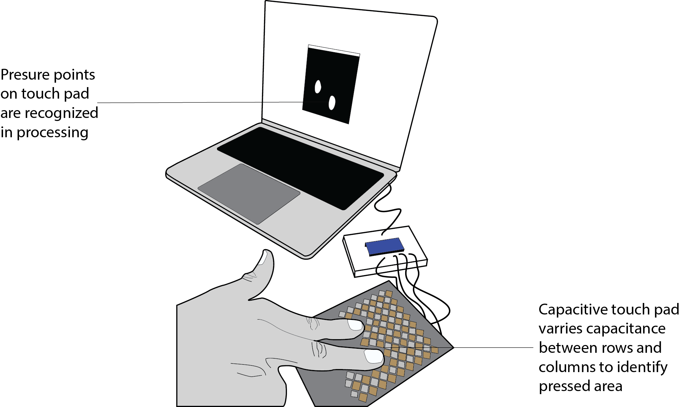 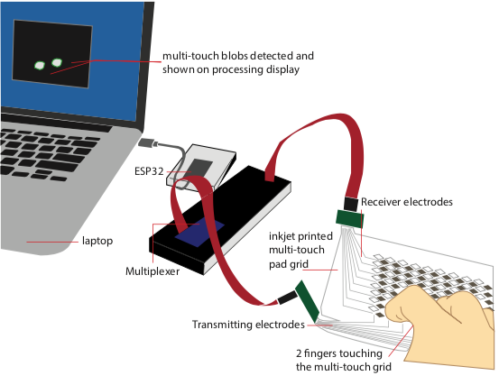
Steps:
- Useful Features of Rotoscopes
- Tips & Tricks for Drawing Rotoscopes
- Load Photo onto Canvas and Lock in Place
- Toggling the Photo On/Off
- Tracing the Outlines on the Photo
- Adding Text Labels
Deliverables
At the end of the lab, upload to your student google drive:- the underlying
photo(.png or .jpg) you used for your rotoscope - a
rotoscope(.pdf) of yourmulti-touch padwith afinger touchingand a laptop or other computer display in the background showing theblob detectionworking, the most important technical components should belabeledto facilitate understanding what is going on in your drawing
Help us Improve Class Materials for Lab13:
Please let us know if you had any trouble with the drawing software or if anything was confusing in the write up.
You can add your comments here.
Please let us know if you had any trouble with the drawing software or if anything was confusing in the write up.
You can add your comments here.
(1) Useful Features of Rotoscopes
Tracing Outlines on Photo rather than Freehand Drawing: Rotoscopes aredrawings made on top of photos. The photo is deleted at the end, leaving you with a nice clean visual. I'm terrible at drawing, this is why I love rotoscopes! You only need to trace the outlines of the photo, which is much easier than freehand drawing!Below are some examples from our research papers that show how a photo was translated into a drawing:
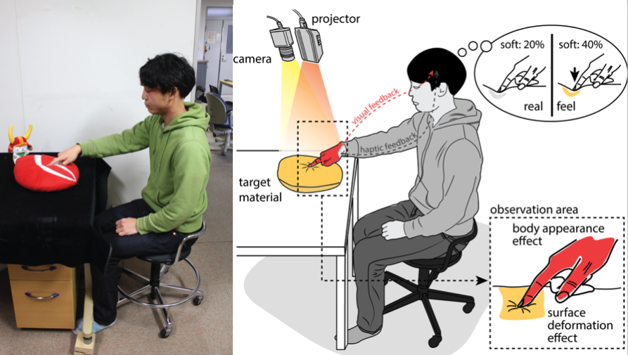
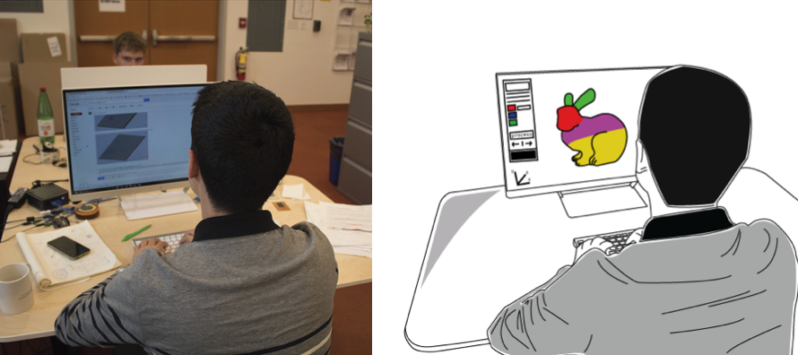
Focusing on the essential idea: Rotoscope allow to
communicate ideas without focusing too much on the details, i.e. they are more abstract and thus often easier to comprehend. Note how, for instance, in the photos above, there is a lot of stuff in the background, which gets removed when you convert the photo into a drawing.More Scalable: Rotoscopes are also
more scalalable than photos since they consist of only vector lines rather than pixels. Below are some images from the Understanding Comics book that highlight these ideas.(2) Tips & Tricks for Drawing Rotoscopes
There are many things you can do to make your rotoscope look better, below we only focus on a few tips, which immediately improve the quality of your drawing.Thick Outlines: We recommend you use a
thicker outline for all the lines that are on the outside of your object (e.g. the edge of the multi-touch pad) and thinner lines for everything inside (e.g. the individual rectangles of the electrodes).No need to trace all lines: If you trace every single line in a photo, your drawing will look
cluttered. Instead, think about which lines are really essential to capture the shape and only draw those, discarding the rest. In the example below, we don't need to draw all the lines inside the hand, instead we only drew a single line to indicate the thumb. The same is true in the drawing below with cubes, where we only drew in some fibers and not all of them (the cube is filled with thousands of fibers).Fill Colors: No need to go super fancy on fill colors, it is often more effective to use a
single color to not distract too much from the essential message the drawing should communicate.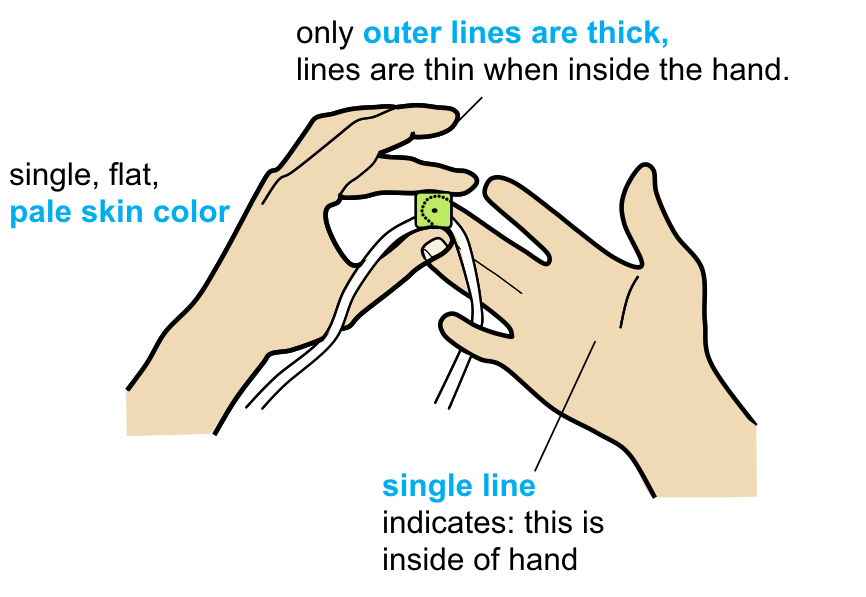
The rotoscopes come from this paper:
Back-of-device interaction allows creating very small touch devices (CHI 2009)
Indicating Depth: In the example of the cube below, the default approach may be to draw all the edges of the cube as overlapping black lines. However, that would be very confusing for the viewer because they would not know which black line is in the front or in the back. To indicate depth, you can use
white space around the line in the front to show that the line in the back is further behind. These so called cut lines help the viewer better understand the depth ordering. The white space can be created by either adding a white outline around your black line or by drawing a white line next to the black line.Perspective Drawing: The cubes below are not copies of each other. Since one cube is higher up than the other, they need to be
drawn individually with their own perspective. To figure out how the lines should be angled, you can draw either one or two vanishing points first and then draw the objects you need by extending their lines towards the vanishing point.The rotoscopes come from this paper:
Lumino: tangible blocks for tabletop computers based on glass fiber bundles (CHI 2010)
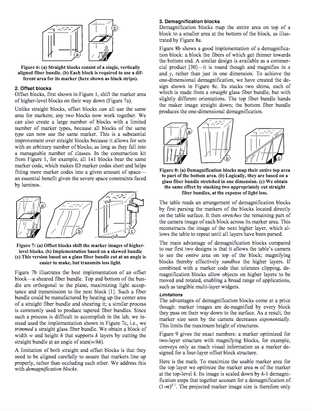
(3) Take Photo of Multi-Touch Pad
Take Photo or Extract Frame from Video: First, start bytaking a photo of your multi-touch pad from your preferred angle showing the pset4 blob detection in the background on your laptop display when a finger is touching (see examples above). Make sure all of these things are present. Instead of taking a new photo, you can also look at the pset4 video you submitted and see if you can extract a frame from there (e.g., take a screenshot). If you did not finish pset4, let us know and we can provide you with a photo. If you have pset5 already working, you can also use a pset5 touch pressure frame.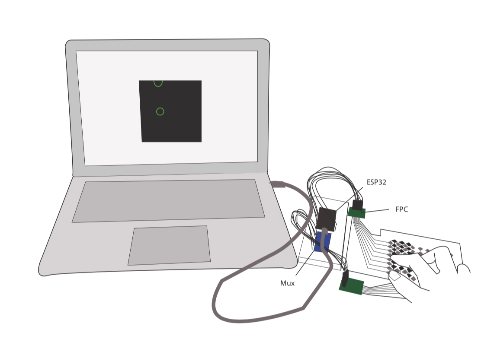 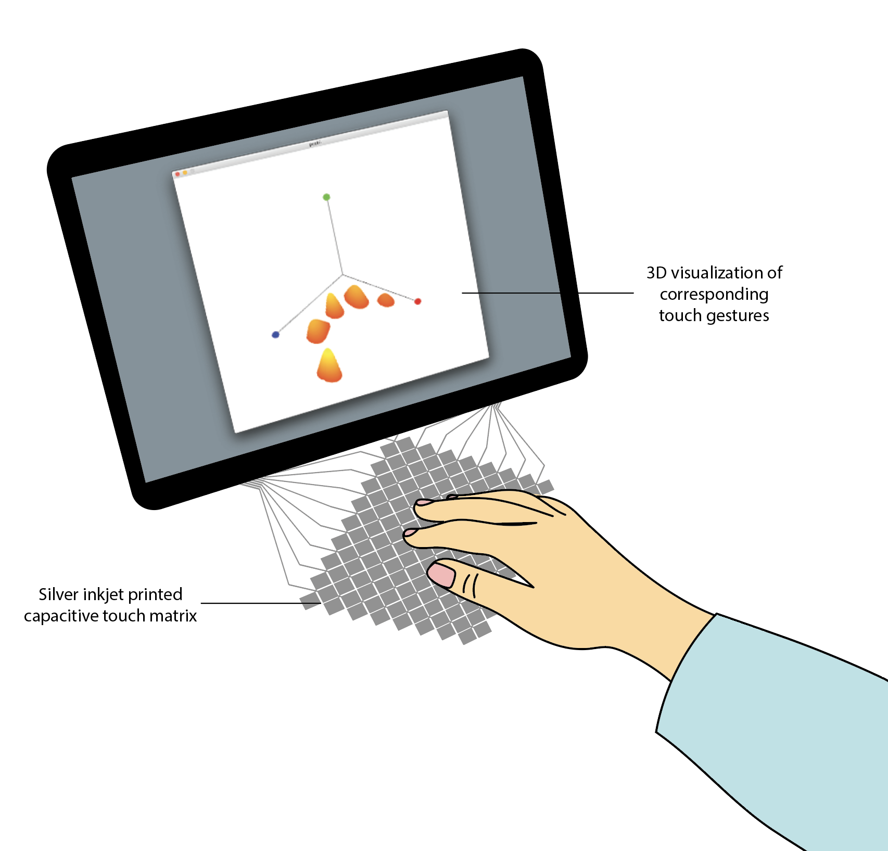
(4) Basic Illustrator Techniques
Let's get started with drawing your multi-touch pad.We made
video tutorials that guide you through some basic and advanced tools in Illustrator that will come in handy as you work on this lab. The video quality might be better if you click on the YouTube icon in the lower left corner, which opens a new tab and you can set the quality to 1080p.Open Drawing Program: Open Adobe Illustrator.
Load Photo onto Canvas: First,
place the image onto your canvas by navigating to File -> Place.... Then scale the image to the desired size while keeping its aspect ratio (hold shift + drag corner of image). Remember that the rotoscope is a vector drawing in the end, so it does not really matter at what size you draw it at since we can always scale it later.Reduce Opacity of Photo: You should make your photo slightly transparent so that it's easier to trace over. You can do this by choosing the selection tool, clicking on your image, and then lowering the
Opacity slider. Lock Photo onto Canvas: Next, you have to lock your image so that it stays in place while you are tracing. You will need the
Layers panel for this, so if you do not see it, navigate to Window (in the toolbar) and make sure Layers is checked. Then, find the Layers panel and click on the blank space next to the eyeball icon to lock the layer containing the photo. 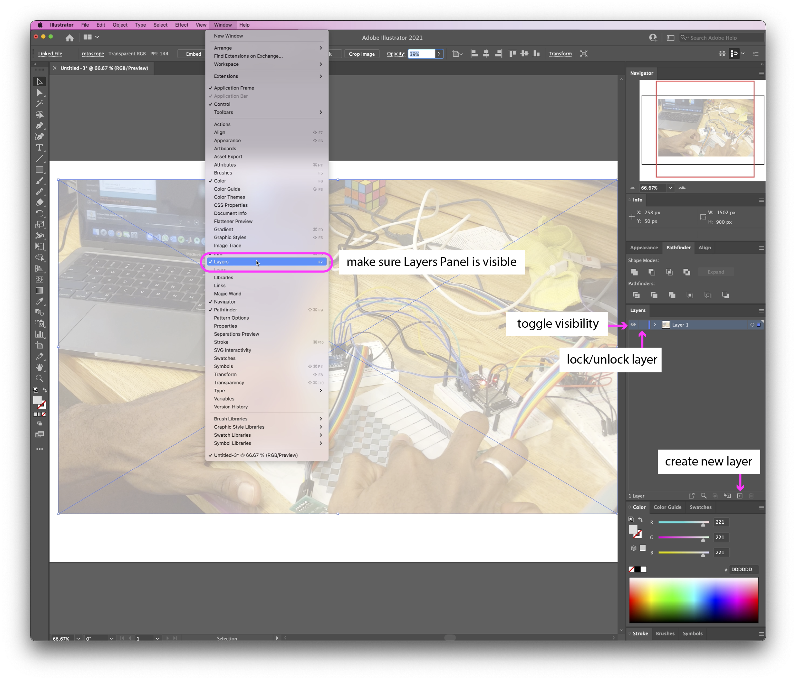
Create a new Layer for your drawing: We will draw our rotoscope on a
new layer. In the Layers panel, click on the small icon that says Create New Layer. Choose Stroke Color: Before you start drawing,
choose a stroke color that is clearly visible against the photo. For instance, if your photo is very light, a black stroke will be the most visible, whereas a white stroke would be harder to see. You can select the stroke color in the left toolbar.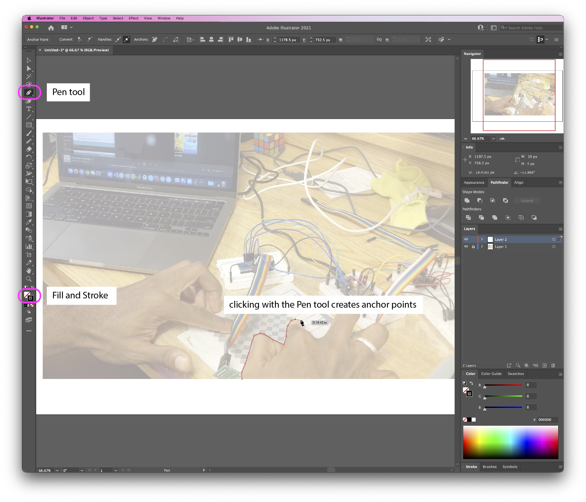
Creating Hard-Edged Shapes with the Pen Tool: We will mainly use the
Pen tool (shortcut: P) for drawing the outlines. You can find it in the left tool bar. Clicking with the Pen tool creates a path of anchor points that form the boundary of your shape. The more anchor points you have, the more detailed your shape can be. To close a shape, simply click on your first anchor point. Smoothing Out Edges with the Smooth Tool: You can use the
Smooth tool to soften rough edges and create more organic shapes. Go to the left tool bar and, next to the paintbrush icon, you can see the Shaper Tool. Right click on that and select the Smooth tool. Click and drag the smooth tool along the edges that you want to soften.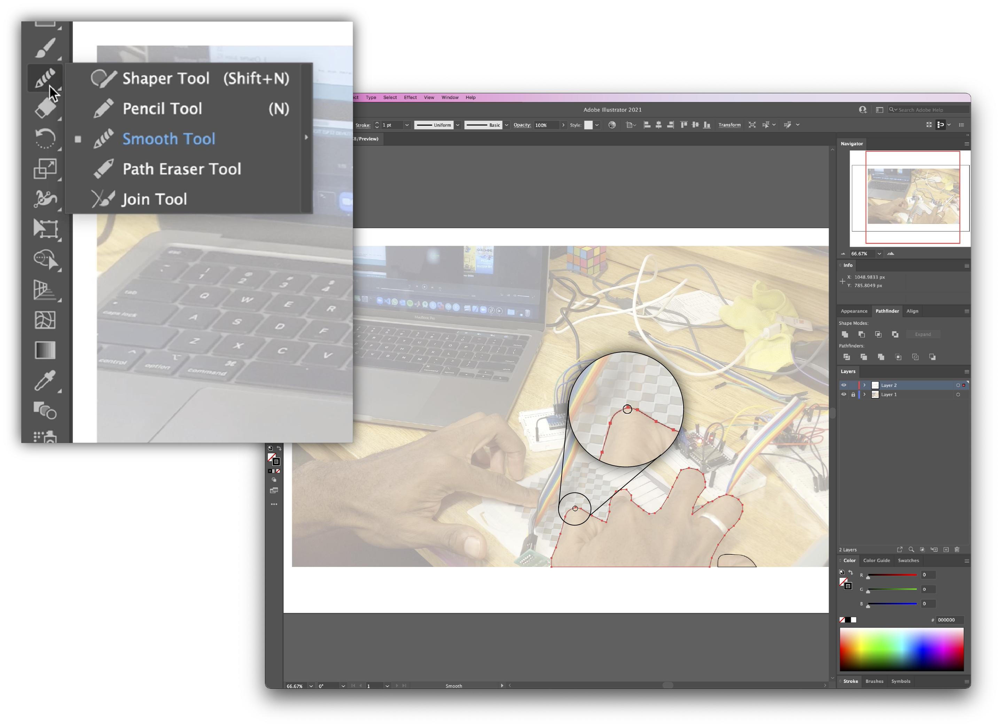
Adjust Path Points: To adjust the position of anchor points, select the
Direct Selection tool (shorcut: A) (which is right below the Selection Tool), then click and drag your anchor points around. You can also move anchor points using the arrow keys on your keyboard. Add/Remove Anchor Points: If want to increase the fidelity of your drawing, you can add additional path points by right clicking the Pen tool and choosing the
Add Anchor Point tool (shortcut: +) from the dropdown menu. You can then click on the parts of your shape that you want to add anchor points to. The Remove Anchor Point (shortcut: -) tool works in the same way. Toggle a Layer's Visibility On/Off: Since we created our drawing and reference photo on separate layers, we can easily see how our drawing looks like at intermediate stages by
toggling the photo layer's visibility on/off. To see how the drawing looks on its own, you can hide the photo layer (Layer 1) by clicking the eyeball icon to the left of the layer name. Always keep Layer 1 locked and select Layer 2 before resuming your drawing, as this ensures that the photographic and drawn elements do not intermix. If you accidentally draw on the wrong layer, you can always select your path, cut it out (command + X), select Layer 2, then paste it in place (command+f).(5) Advanced Illustrator Techniques
Now that you've learned some basic techniques in Illustrator, here are some advanced techniques that you can try.Rotate Shapes on a 3D Plane: Rather than drawing shapes in perspective, you can save a lot of time and effort by drawing the bird's eye view first and then accounting for the perspective later. You can do so by going to
Effect -> 3D -> Rotate... Adjust the axis rotations until you get the desired results. 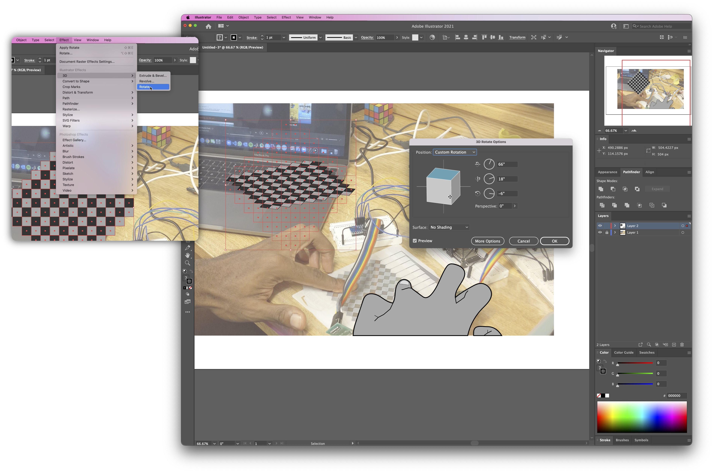
Use Pathfinder to Create Composite Shapes: The
Pathfinder tool makes it easy to create complex shapes by manipulating multiple shapes -- it works very similarly to the Boolean operations you see in 3D modeling. To show the Pathfinder panel, go to Window and make sure it's checked. Draw two shapes that overlap with each other, select them, and then select the Unite shape mode in the Pathfinder panel. This combines the selected shapes into one larger shape. Try experimenting with the different Pathfinder shape modes to create unique composite shapes. If you'd like to learn more about the Pathfinder tool, here is a nice tutorial that covers all its operations.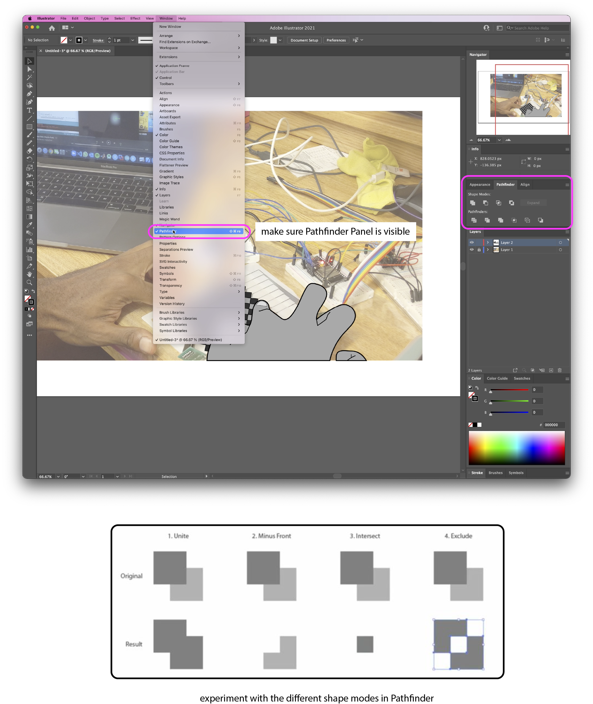
(6) Adding Text Labels
Finally, don't forget to add the text labels to your drawing.Think about what to Label: Spend a minute to think about what you want to label. We want to
label the essential parts that help a viewer understand how the multi-touch pad works, without labeling too much, i.e. we don't want to label every thing electronic component on the breadboard.Adding Text Labels: To add text labels, you can use the text tool. In some situations, you may want to add a filled rectangle behind your text to serve as a "backdrop". This makes your text stand out more.
Drawing Lines to the Text Labels: To
point at the part of the drawing you want to label, you can use simple lines.Deliverables
At the end of the lab, upload to your student google drive:- the underlying
photo(.png or .jpg) you used for your rotoscope - a
rotoscope(.pdf) of yourmulti-touch padwith afinger touchingand a laptop or other computer display in the background showing theblob detectionworking, the most important technical components should belabeledto facilitate understanding what is going on in your drawing
Group Project Rotoscopes
A part of your group project final deliverable in December will also be a rotoscope. Below you see some of the rotoscopes from past year's teams.